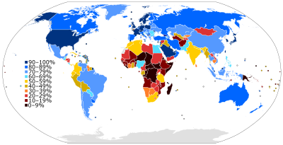

WHY?
Technology has always been intended to make life easier for people. From the invention of radio to allow people to communicate over long distances, to vehicles that allow efficient travel.
Universal Design is the next step in technological advancement. When we creat modern technology, apps, websites, tools. We want to make sure it is accessible and usable for all. By accounting for those with certain disabilities, we can create a more inclusive and diverse audience.
This is important from an inclusivity perspective as well as a business perspective. As you will see, the possible target audience can increase substantially by designing and accounting for people with disabilities.
Target Audience:
According to internetworldstats.com, 90% of the United States Population are internet users, around 297 million users. Likewise, 13% of the United States population has some form of disability (42 million people).
If these disabled people could be helped by creating accessible technology and services, we could have more internet users that otherwise could not easily access technology due to lack of accessibility and accommadations, or we could improve the accessibility of disabled users that can't efficiently use this technology.
This image shows just how many people are internet users across the world, now imagine if we designed with inclusivity and accessibility in mind. Your service could reach millions of more people by using Universal Design!